Как удалить фото или видео из Инстаграма

- Удалить публикацию из Ленты с телефона
- Убрать пост в Инстаграме* с компьютера
- Удаление фотографии из серии фото
- Полное удаление всех постов разом
- Как удалить фотки отправленные в Директ
- Архив и хранение файлов: как переместить публикацию
- Как восстановить пост в Инстаграме*
- Удаление поста из Черновиков
- Что делать если запись была удалена администрацией
Удалить фото в Инстаграме* возможно через мобильную версию, компьютерную и даже с помощью Facebook*. Публикацию также можно спрятать в Архив и вернуть в свободный доступ по той же дате.
Удалить публикацию из Ленты с телефона
С помощью версии для мобильных устройств пользователь может удалять, редактировать публикации и скрывать. В последних обновлениях, если убрать снимок из Ленты, он будет перенаправлен в раздел: «Недавно удаленные». Если автор захочет восстановить контент, то он сможет это сделать с помощью этого раздела. Как убрать публикацию из профиля:
- Зайти в Инстаграм* – выбрать запись, которую нужно убрать.
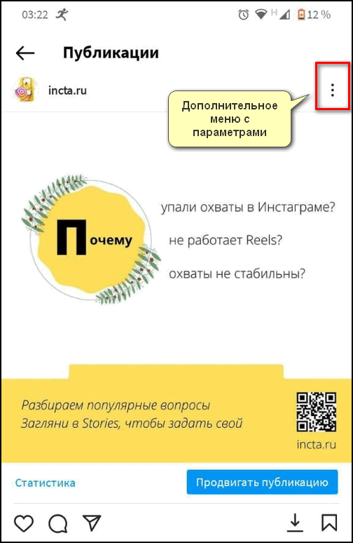
- Нажать над ней три точки сверху – Удалить публикацию.
- Подтвердить.
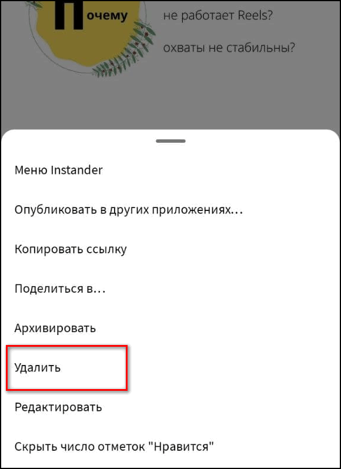
Далее, если пользователь впервые удаляет в новой версии, появится уведомление: «Запись была перемещена во временное хранилище». От него можно отказаться и тогда посты, удаленные более 30 дней назад, не будут сохраняться.
Убрать пост в Инстаграме* с компьютера
Удалить пост в Инстаграме* с компьютера также просто, как и выполнить те же действия, с мобильной. Отличие только в том, что с ПК-формата нельзя редактировать запись. Убрать публикацию:
- Зайти в Instagram* с веб-формата – перейти к своим публикациям.
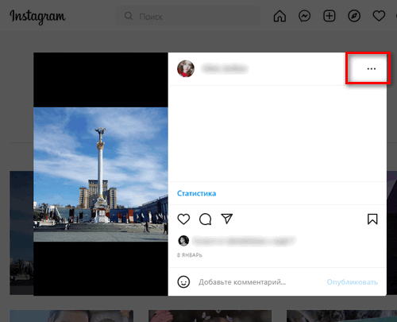
- Открыть нужный пост – нажать три точки сверху.
- Удалить – подтвердить действие.
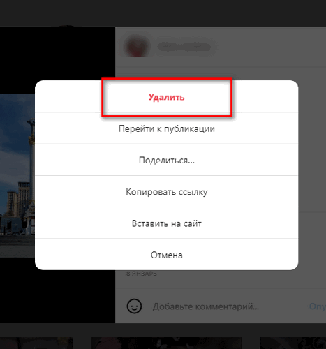
Но в этом случае, автор может не найти публикацию в недавно сохраненных. Также, перенести в Архив не получится, так как этот вариант подходит только для мобильных версий.
Поэтому, есть второй вариант, как работать с социальной сетью на компьютере – воспользоваться эмулятором: Bluestacks, Nox. Эмулятор повторяет операционную систему Android и позволяет владельцу профиля установить те же приложения, что и на смартфон.
Удаление фотографии из серии фото
Удалить фото из карусели в Инстаграме* в единичном порядке не получится: пользователю нужно убрать всю публикацию. Поэтому остается всего один вариант: сохранить снимки, удалить всю «галерею» и разместить заново. Дата размещения, соответственно, изменится на текущий день. Как изменить порядок снимков:
- Зайти в Инстаграм* – выбрать запись, где добавлено несколько фотографий.
- Сохранить каждое фото отдельно – Удалить.
- Перейти к добавлению новой записи – выбрать фото, которые должны быть в карусели.
Чтобы получить свои фотографии, если оригинал не был сохранен, пользователь может либо создать скриншот, либо воспользоваться instagrabber.ru. Это сервис, который поможет в сохранении своих постов на смартфон или компьютер.
Полное удаление всех постов разом
Сама социальная сеть не поддерживает удаления нескольких публикаций, но есть способ как убрать до пяти постов за один раз. Для этого, владельцу аккаунта нужно подключить учетную запись Facebook* и разрешить доступ в Creator Studio.
Как удалить сразу несколько постов:
- Зайти в Creator Studio – разрешить подключение к профилю
- Авторизоваться – появится: «Лента».
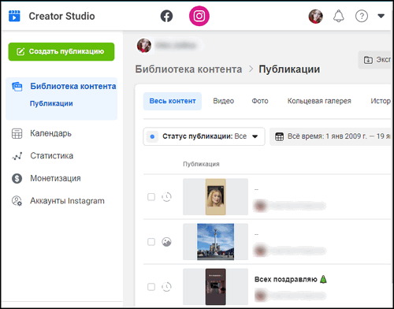
- Нажать рядом с публикацией по пустому полю – выделить галочкой записи, которые нужно удалить.
- Сверху нажать по значку: «Корзины».
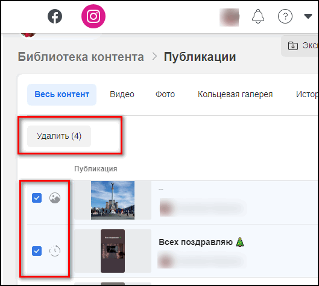
Теперь указанные посты будут убраны официальным способом и пользователю не придется устанавливаться сторонние приложения.
Но, если у аккаунта статус «Личный» или «Закрытый» - подключить Facebook* не получится. Остается только поочередно удалять публикации и соблюдать лимиты социальной сети.
Как удалить фотки отправленные в Директ
Удалить отправленные фото из Директа возможно лишь в случае, если пользователь сразу выберет функцию: «Отменить отправку». Иначе собеседник сможет их открыть и сохранить.
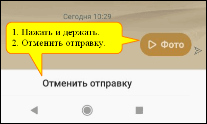
Относительно медиаконтента в личных сообщениях есть правила:- фото, которые были переданы через Галерею – можно сохранить или сделать скриншот;
- если воспользоваться функцией: «Временное фото», то получатель не сможет сделать скрин. Точнее, отправителю придет уведомление, что его фото сохранили.
Чтобы отменить отправку снимка, который был добавлен из Галереи:
- Нажать по фотографии – выбрать из выпадающего списка вариант: «Отменить отправку».
- Подождать, когда картинка будет удалена.
То же касается и других сообщений, если собеседник решил отправить ссылку на чужую публикацию или же поделился Историей.
Архив и хранение файлов: как переместить публикацию
С помощью раздела «Архив» можно прятать публикации, менять местами. Если убрать в Архив, то посты в профиле сдвинутся на одну. При повторном размещении та же запись будет добавлена на изначальную дату. Как спрятать публикацию в Архив:
- Зайти в аккаунт – выбрать пост, который нужно убрать в Архив.
- Нажать сверху три точки - Архивировать.
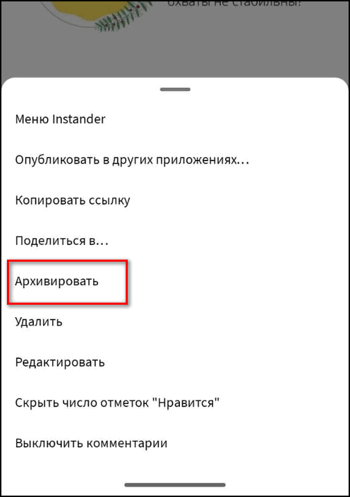
Чтобы снова посмотреть ту же запись, владельцу профиля нужно перейти к разделу: «Настройки» – Архив.
В этой вкладке хранятся не только скрытые публикации, но и записи из Истории. Каждый пост находится на временной шкале, с помощью которой можно выбрать числа и найти фото/видео.
Как восстановить пост в Инстаграме*
Один из способов, как вернуть запись в Инстаграме* – использовать раздел: «Недавно удаленные». В нем расположены публикации, которые автор профиля удалил менее 30 дней назад. И если настроить хранилище, то все убранные файлы будут автоматически перемещены в этот раздел. Как найти и вернуть удаленную запись:
- Зайти в Инстаграм* – Настройки.
- Аккаунт – Недавно удаленные.
- Посмотреть записи, которые были недавно убраны владельцем профиля.
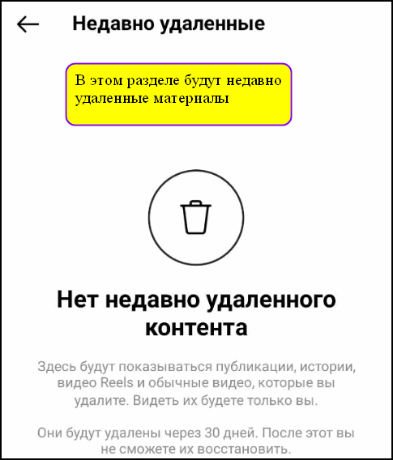
- Нажать над записью сверху три точки – Восстановить.
Запись будет возвращена по той же дате, когда и была опубликована. Таким способом можно удалять не только фотоснимки, но и видео, Reels. Раздел с «Недавно удаленными» не хранит Истории, так как те автоматически перемещаются в Архив после 24 часов.
Через облачное хранилище
Второй вариант, как вернуть удаленные публикации в Инстаграме* – воспользоваться подключенным облачным хранилищем. Если на смартфоне был подключен Google Диск или iCloud, то созданные медиафайлы копируются. Такой вариант подходит, если владелец профиля случайно удалил пост и не сохранил копию. Вернуть запись из облачного хранилища:
- Зайти в раздел «Файлы» на смартфоне – выбрать диск, куда отправляются медиадокументы.
- Выбрать фото или видео, которые были удалены с телефона – сохранить на смартфон.
- Заново опубликовать в Инстаграме*.
Облачное хранилище хранит не все данные, поэтому наиболее старые фотоснимки могут отсутствовать. Чтобы не искать среди материалов свои фотографии, пользователю необходимо в «Настройках» Инстаграма* указать: «Создавать копию снимков». Как сохранять копии:
- Настройки Instagram* – Аккаунт.
- Исходные публикации – переместить ползунок в состояние «Активно» на «Сохранять копии».
При следующем размещении фотографий копия снимка будет отправлена в Галерею мобильного устройства.
Удаление поста из Черновиков
Последний раздел, где могут храниться фотоснимки – Черновики. Удалить фото в Инстаграме* с телефона, воспользовавшись черновиками возможно только в том случае, если автор предварительно создавал копии таких файлов. Как посмотреть и убрать:
- Перейти в размещению публикаций – нажать по плашке: «Черновики».
- Первыми появятся фотоснимки, которые были ранее сохранены пользователем.
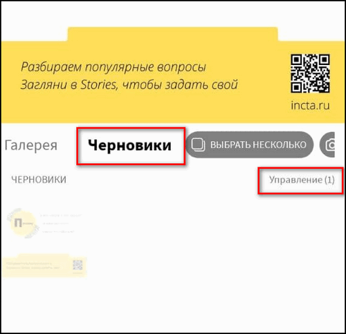
- Управление – нажать по значку в виде «Карандаша».
- Сбросить – подтвердить.
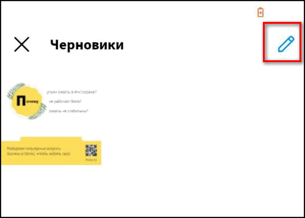
Можно выделить до десяти сохраненных постов, которые пользователь запланировал разместить в дальнейшем. Удаляя, также будет убран и текст, добавленный в описание.
Что делать если запись была удалена администрацией
Ситуация, когда запись была удалена из Инстаграма* модерацией, возникает при нарушении правил пользования. К примеру, владелец блога использовал нецензурные выражения, оскорбления или враждебные символы. Если запись была удалена администрацией:
- владелец страницы получить уведомление. Указана причина, почему именно удалили публикацию;
- запись будет недоступной для просмотра зрителями;
- можно оспорить решение администрации, но только в случае, если у владельца страницы есть доказательства.
Чтобы оспорить решение администрации:
- Зайти в Инстаграм* – Настройки.
- Аккаунт – Статус.
- Выбрать публикацию, которая была удалена.
- Оспорить – добавить описание и отправить на рассмотрение.
Администрация оставляет за собой право удалить аккаунт без предупреждения, если тот не соответствует политике пользования. Или же, оспорить запись возможно через раздел «Уведомления», где есть полный текст причины удаления и дата.